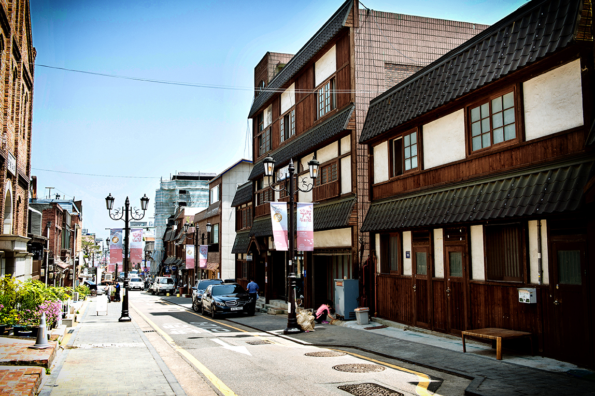

개항장거리 소개
역사가 살아 숨쉬는,개항장 거리.
인천광역시 중구 송학동과 중앙동 일대 지역으로 구한말부터 일제강점기 사이에 조성된 근대 문화유적지가 다양하게 존재하는 곳이다. '개항장 누리길'이라고도 한다. 인천 차이나타운, 송월동 동화마을과도 연결되기 때문에 당일 코스로 돌아볼 수 있는 여행지이며 일부 공간에서는 사진 촬영하기 좋은 포토스팟이 있기도 하다.
개항장거리 명소소개
개항장거리
다소 상업적인 차이나타운보다 훨씬 볼거리가 많고 골목마다 돌아보면 옛 일본식 적산가옥과 전통적인 가옥,은행건물, 박물관등 이색적인 건물이 많은 것이 특징이다. 매년 늦 여름과 초가을 쯔음에 인천개항장 문화재 야행이라는 축제가 열려 많은 관광객들이 찾는 관광지이기도 하다.
월미도
달의 꼬리를 닮았다하여 이름 붙여진 월미도(月尾島)는 러일 전쟁, 병인양요 및 인천상륙작전 등 근대역사의 주무대이자 월미도 조탕으로 유명했던 한국을 대표하는 유원지이다. 월미놀이공원달의 꼬리를 닮았다 하여 월미도라고 이름 붙은 이곳에는 국내 유원지를 대표하는 월미놀이공원이 있다.
차이나타운
소개의 글 인천 차이나타운은 인천시 중구 선린동과 북성동 일대에 형성된 화교밀집지역이다. 1883년(고종 20) 인천항이 개항되고 이듬해 1884년 지금의 선린동 일대에 청나라 조계지가 설치되면서 중국인들이 이곳에 정착하게 되었다.
개항장거리 음식소개
차이나타운 짜장면
인천 차이나타운에는 짜장면을 맛볼 수 있는 다양한 중국집이 있다. 짜장면의 발상지로 알려진 공화춘, 하얀 백년짜장이 주 메뉴인 만다복, 콩을 베이스로 만든 하얀짜장이 대표 메뉴인 연경 등이 있다. 주말에는 다소 웨이팅이 있을 수 있다.
개항장거리 음식소개
신포시장 닭강정
신포시장 닭강정은 인천광역시 중구 신포동에 위치한 신포시장의 명물로, 매콤달콤한 맛과 바삭한 튀김이 특징이다. 신포시장 닭강정은 TV 프로그램인 수요미식회, 백종원의 3대천왕에도 소개되었다.
개항장거리 숙소안내
하버파크 호텔

하버 파크 호텔은 월미도의 해안가에 위치해 있으며, 인천항의 파노라마 뷰를 제공하며,월미도 놀이공원, 차이나타운, 전통 정원과 같은 인근 명소를 탐험하며 아름다움과 문화를 만끽할 수 있다. 월미도에 위치한 하버 파크 호텔은 해변의 매력, 짜릿한 명소, 신선한 해산물을 제공하여 많은 관광객들에게 인기를 끌고 있다.